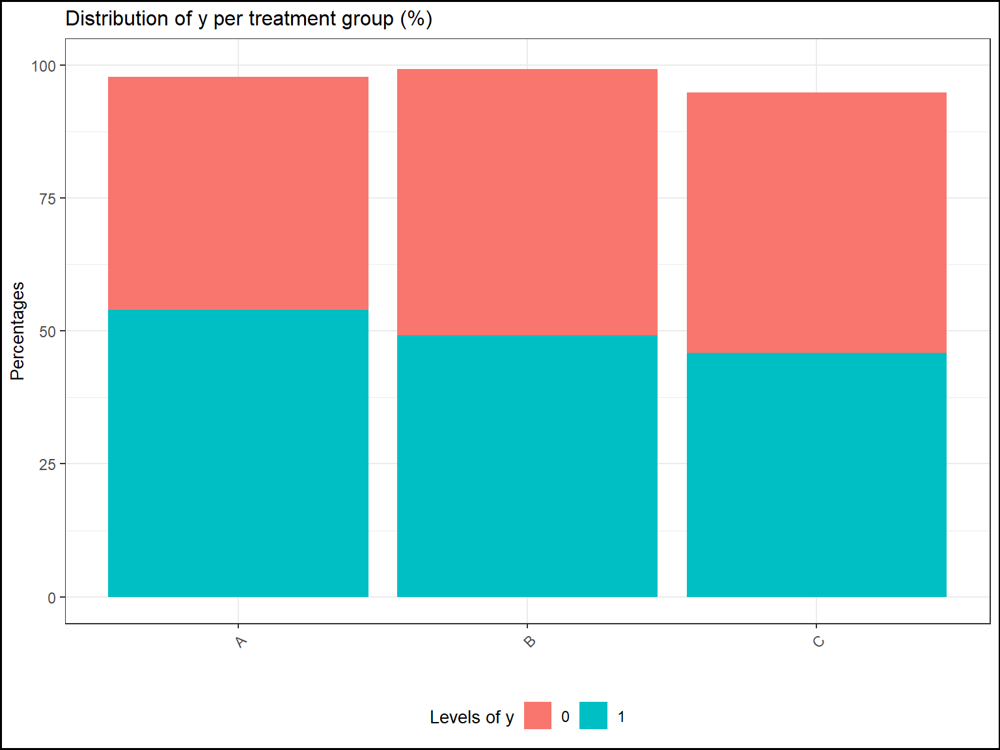
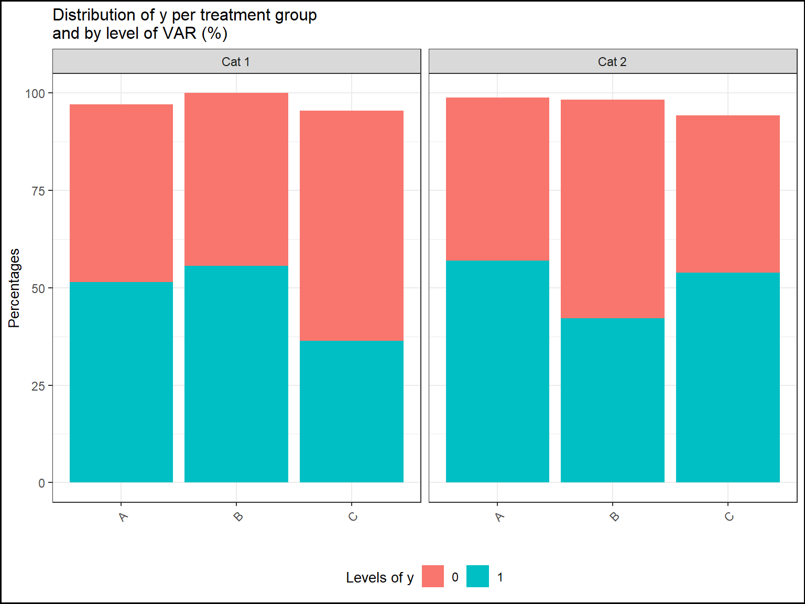

ClinReport Vignette 3: Graphic Outputs
Jean-Francois COLLIN
2019-03-12
clinreport_graphics.RmdFirst step
Start by loading all usual libraries.
library(ClinReport)
library(officer)
library(flextable)
library(dplyr)
library(reshape2)
library(nlme)
library(emmeans)
library(car)Load your data.
# We will use fake data
data(data)
print(head(data))
#> y_numeric y_logistic y_poisson baseline VAR GROUP TIMEPOINT SUBJID
#> 1 -0.4203490 1 5 -0.4203490 Cat 1 A D0 Subj 1
#> 2 -0.1570941 1 5 -0.1570941 Cat 2 A D0 Subj 1
#> 3 NA 0 3 -2.0853720 Cat 2 A D0 Subj 1
#> 4 -0.4728527 0 5 -0.4728527 Cat 1 A D0 Subj 1
#> 5 -0.8651713 1 4 -0.8651713 Cat 1 A D0 Subj 1
#> 6 -1.5476907 1 3 -1.5476907 Cat 1 A D0 Subj 1Quantitative graphics
First you need to produce a quantitative table using report.quanti() function then you use the plot() function on the result:
If there is no explicative variable, the corresponding graphic of the call to report.quanti() is a barplot of the mean of the response value.
# Only one numerical response
tab1=report.quanti(data=data,y="y_numeric")
plot(tab1,title="Mean (+/-SD) of y",add.sd=T,ylab="Mean Response value",xlab="")
If there is one explicative variable, the corresponding graphic will be a barplot per treatment group.
You can personnalize the outputs using, the usual, title xlab ylab ylim etc.. options.
# one numerical response ; one explicative variable
tab2=report.quanti(data=data,y="y_numeric",x1="GROUP")
plot(tab2,title="Mean (+/-SD) of y per treatment group",add.sd=T,ylab="Mean of y",xlab="",
ylim=c(-1,8))If there is also a second explicative variable. The corresponding plot will be a lineplot:
The means will be connected according to this second variable to capture the evolution accross its different levels.
# one numerical response ; two explicative variable
tab3=report.quanti(data=data,y="y_numeric",x1="GROUP",x2="TIMEPOINT")
plot(tab3,title="Mean (+/-SD) of y per treatment group",add.sd=T,ylab="Mean of y",xlab="",
ylim=c(-1,8))
#> Warning: Removed 1 rows containing missing values (geom_point).
#> Warning: Removed 1 rows containing missing values (geom_path).
#> Warning: Removed 3 rows containing missing values (geom_errorbar).
Qualitative graphics
For qualitative statistics, the corresponding graphics will be barplots.
If only the argument y is supplied, the corresponding graphic will looks like:
# Only one categorical response
tab1=report.quali(data=data,y="y_logistic")
plot(tab1,title="Distribution of y (%)",ylab="Percentages",xlab="",ylim=c(0,100))If there is one explicative variable, it will be split by color and split on the x-axis:
# one categorical response ; one categorical explicative variable
tab1=report.quali(data=data,y="y_logistic",x1="GROUP")
plot(tab1,title="Distribution of y per treatment group (%)",
ylab="Percentages",xlab="",ylim=c(0,100),legend.label="Levels of y")
If there is two explicative variables, it will be split by color, split on the x-axis and split by panels:
# one categorical response ; two categorical explicative variables
tab1=report.quali(data=data,y="y_logistic",x1="GROUP",x2="VAR")
plot(tab1,title="Distribution of y per treatment group\nand by level of VAR (%)",
ylab="Percentages",xlab="",ylim=c(0,100),legend.label="Levels of y")
LS-means graphics
For LS-Means graphics, it will be pretty much the same graphics as the graphics of quantitative statistics.
Instead of displaying the standard deviations, it’s the 95% confidence intervals that are displayed.
For one explicative variable:
# Only one categorical response
mod=lme(y_numeric~GROUP,
random=~1|SUBJID,data=data,na.action=na.omit)
test=emmeans(mod,~GROUP)
tab.mod=report.lsmeans(lsm=test,x1="GROUP",data=data)
plot(tab.mod,title="LS-means evolution of y per treatment group",
ylab="LS-Means",xlab="",add.ci=TRUE)With two explicative variables:
# Only one categorical response
mod=lme(y_numeric~baseline+GROUP+TIMEPOINT+GROUP*TIMEPOINT,
random=~1|SUBJID,data=data,na.action=na.omit)
test=emmeans(mod,~GROUP|TIMEPOINT)
tab.mod=report.lsmeans(lsm=test,x1="GROUP",
x2="TIMEPOINT",at.row="TIMEPOINT",data=data)
plot(tab.mod,title="LS-means evolution of y per treatment group\nas a function of time",
ylab="LS-Means",xlab="",add.ci=TRUE)